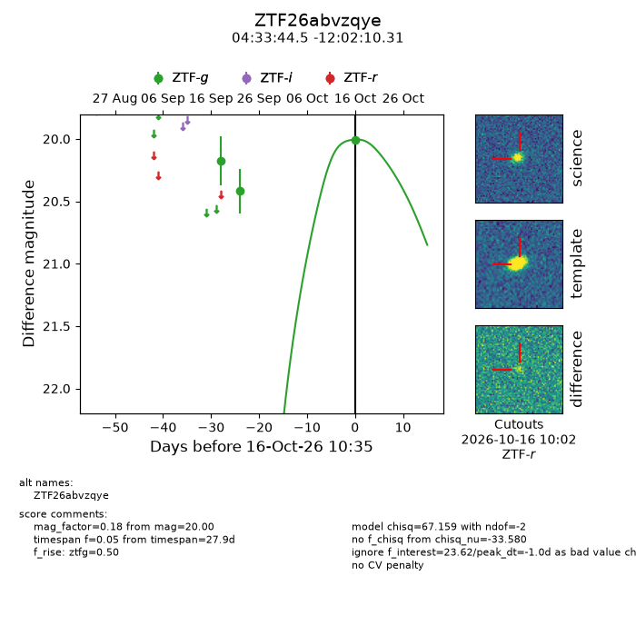
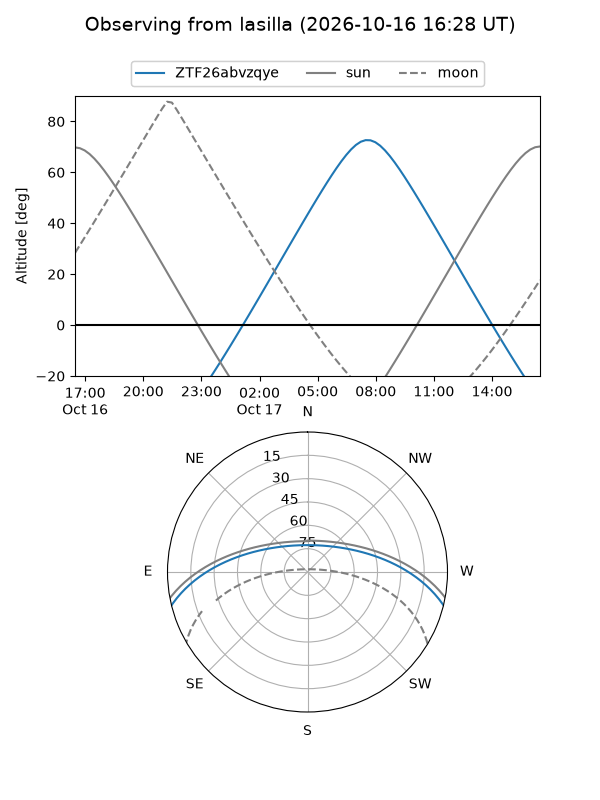
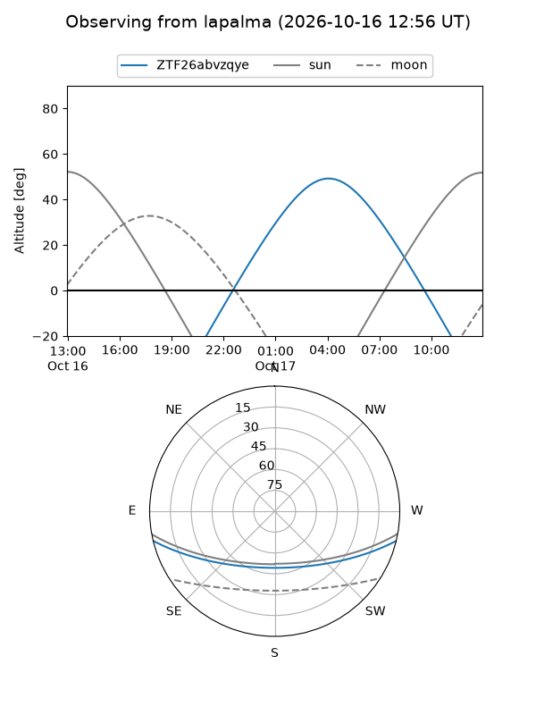
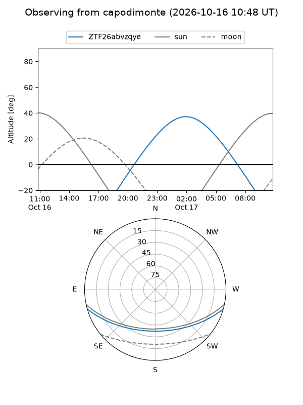
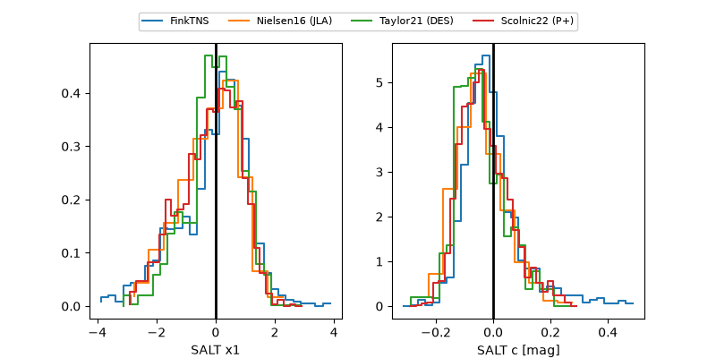

ZTF26abvzqye
Target ZTF26abvzqye at 2026-10-16 10:36
Aliases and brokers:
FINK-ZTF: ztf.fink-portal.org/ZTF26abvzqye
Lasair-ZTF: lasair-ztf.lsst.ac.uk/objects/ZTF26abvzqye
ALeRCE-ZTF: alerce.online/object/ZTF26abvzqye
Direct TNS query: direct search
alt names
ZTF26abvzqye (ztf,fink_ztf)
Coordinates:
equatorial (ra, dec) = 68.4353,-12.03620
equatorial (HMS+DMS) = 04:33:44.47,-12:02:10.31
galactic (l, b) = (208.2183,-35.95496)
Flags:
peak dt: -1.0
Photometry:
last ztfg=20.00
3 ztfg detections
Lightcurve

Visibility



Additional plots
